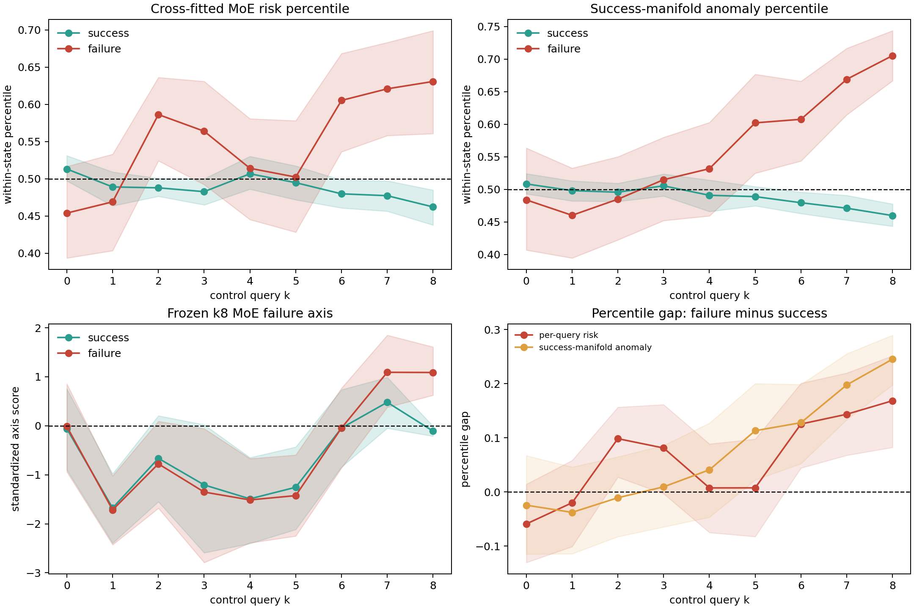
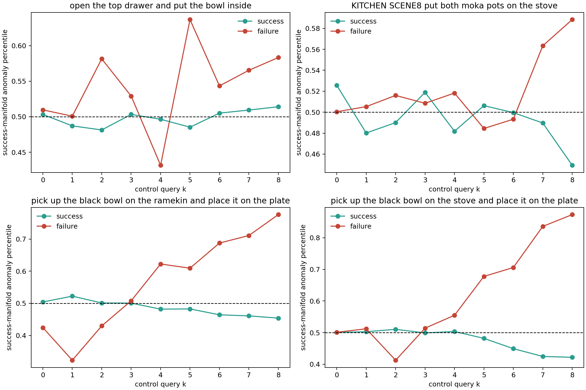

成功质心异常随 rollout 推进
任务等权均值；阴影为 task bootstrap 95% CI
成功
失败
固定 cohort、同初始状态内比较。每个 k 的预测器只读取该 chunk 内部的 10 个去噪轮次；曲线标签是 rollout 最终成功或失败。
左侧按真实 task-level 信号播放状态分支；右侧扫描当前 chunk 内的 4 层 × 10 denoise 差异。
任务等权均值；阴影为 task bootstrap 95% CI
零线以上表示失败 rollout 的信号更高
k0 · 成功质心异常
| 任务 | 失败 n | 成功 | 失败 | 差值 |
|---|
同一 k 的 failure-decoding AUC；0.5 为随机水平
它定位可解码的时间趋势，不提供因果归因。
每次只用当前 chunk 的 10 个 denoise rounds，不拼接前后 chunk。
模型在 initial-state / task 内训练与评分，减少场景难度混杂。
当前实现实际是到训练成功样本质心的 RMS 距离，不是学习流形。
k5 onset 为观察后描述；预注册趋势只比较 k8 与 k0。


请确认 demo-data.js 与该 HTML 位于同一目录。